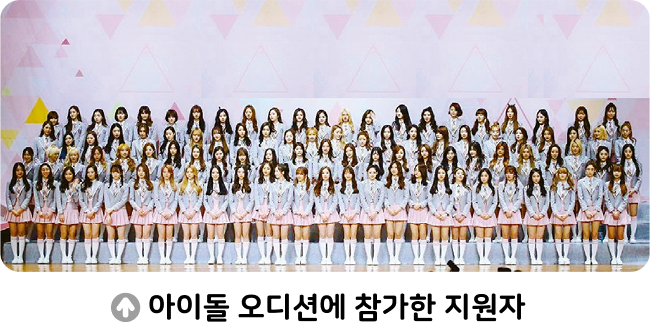

활동하기 아이돌 가수 공정하게 선발하기

◯◯ 연예 기획사는 한국을 대표할 5인조 케이팝(K－Pop) 아이돌 그룹을 선발하기 위해 공개 오디션을 열었다. 공개 오디션에 수많은 지원 자가 몰리며 결선에 50명이나 선발되었다. 이 때문에 불가피하게 경쟁을 통해 최종 5명을 뽑기로 하였다. ◯◯ 연예 기획사는 한국을 대표할 아이돌 그룹으로 데뷔 기회를 얻을 수 있는 지원자를 공정하게 선발하기 위해 어떻게 할지 고민하고 있다.
1 케이팝 아이돌에게 어떤 자질이 필요할지 생각해 보자.
아이돌에게는 춤 실력, 노래 실력, 사람들을 즐겁게 해 주는 실력 등이 필요하다.
2 위에서 정한 자질을 확인하기 위한 구체적인 방법을 이야기해 보자.
공정한 경쟁을 통해 각자의 재능을 발휘하도록 하여 아이돌에게 필요한 자질을 갖추었는지 확인해야 한다.